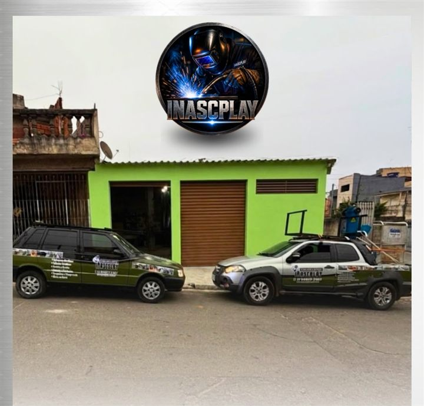
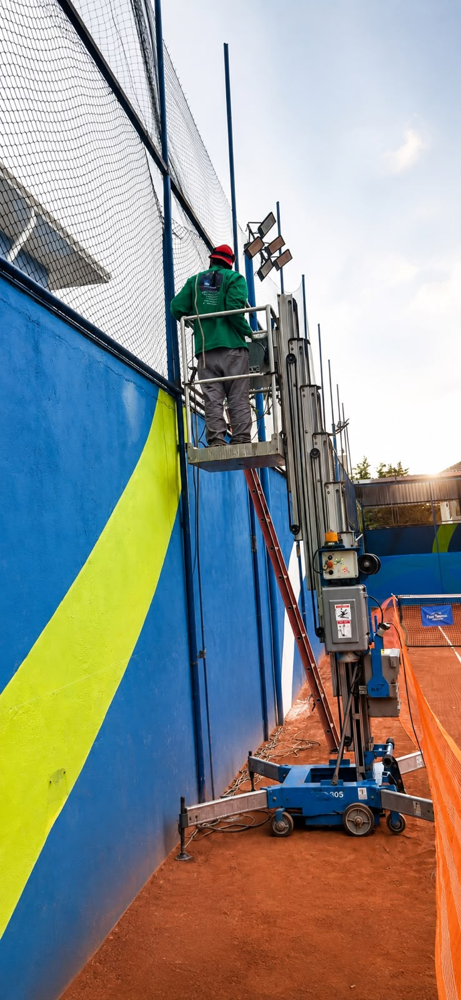
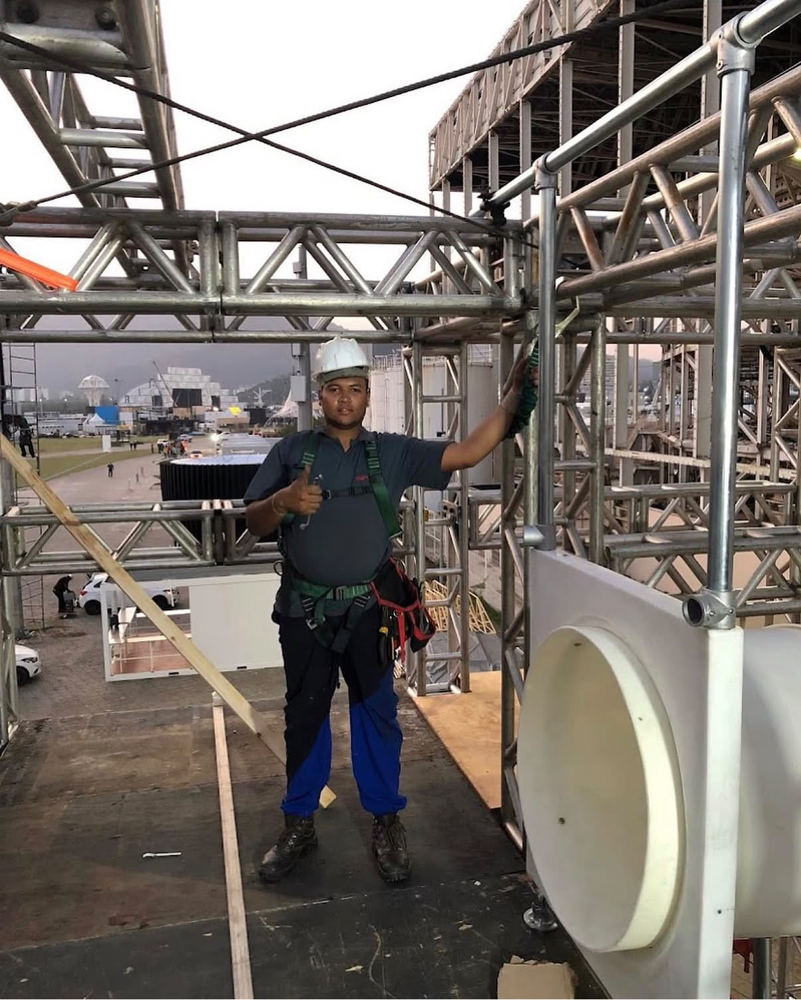
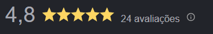
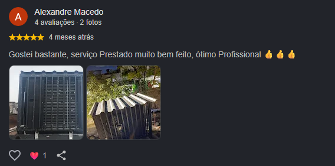
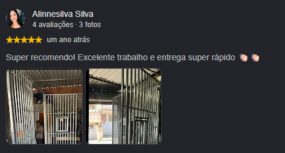

Serralheria em São Paulo — SP
Ferro dobrado.
Aço soldado.
Projeto entregue.
Portões, grades, estruturas metálicas, coberturas e playgrounds sob medida — projetados, fabricados e instalados pela Inascplay.

O que fazemos
Serviços de serralheria
Cada peça é medida, cortada e soldada no local certo — do portão de entrada à estrutura que sustenta o telhado.
Portões e grades
Segurança e acabamento sob medida para residências, comércios e indústrias.
Estruturas metálicas
Vigas, pilares e reforços dimensionados com precisão para durar décadas.
Coberturas
Telhados e coberturas metálicas resistentes ao sol e à chuva.
Playgrounds
Estruturas de aço para diversão, projetadas com foco em segurança.
Escadas e corrimãos
Escadas, corrimãos e guarda-corpos com acabamento fino e seguro.
Projetos sob medida
Do desenho técnico à instalação: soluções personalizadas em metal.

Alcance de até 11 metros de altura
Por que a Inascplay
Direto do galpão para o seu projeto
Atendimento direto
Você fala com quem mede, projeta e executa — sem intermediários.
Orçamento sem compromisso
Envie as medidas ou o endereço pelo WhatsApp e receba uma proposta.
Projeto sob medida
Cada estrutura é desenhada para o seu espaço, não um modelo pronto.
Acabamento industrial
Solda, corte e pintura com padrão de acabamento para durar no tempo.
Equipamento próprio para altura
Plataforma elevatória própria para instalação e manutenção em altura, com segurança.
Nossa trajetória
Sobre nós
A InascPlay Serralheria, Playgrounds e Serviços nasceu em 2020, a partir da experiência e do interesse de Igor por projetos artesanais e soluções em metal.
Iniciamos nossa trajetória no segmento de playgrounds, atuando com manutenção, montagem e criação de equipamentos, sempre priorizando segurança, qualidade e os padrões aplicáveis ao setor.
Com o crescimento da empresa, ampliamos nossa estrutura e investimos em equipamentos e tecnologia, expandindo nossa atuação para serralheria, estruturas metálicas, quadras esportivas, coberturas, portas, vigas e soluções personalizadas.
Hoje, unimos experiência, conhecimento técnico e compromisso para transformar projetos em soluções bem executadas, atendendo engenheiros, arquitetos, construtoras, franqueados e empresas.
Nossa essência
Experiência para executar.
Conhecimento para solucionar.
Compromisso para entregar.
Essa é a InascPlay.

Especialidade Inascplay
Playgrounds em aço, feitos para brincar sem parar.
Projetamos e fabricamos playgrounds estruturados em aço, sob medida para o espaço disponível — em casas, condomínios, escolas, redes de fast food e espaços públicos.
Pedir projeto de playground- Estrutura 100% em aço, sem parafusos aparentes de risco
- Projeto sob medida para o terreno disponível
- Instalação completa, do solo à entrega
- Acabamento pensado para uso infantil diário
Vamos ao projeto
Fale com a Inascplay
Chame no WhatsApp com as medidas, uma foto do local ou só a ideia — a gente monta a proposta.
Solicitar orçamento no WhatsAppOnde estamos
Serralheria InascPlayRua Jadi Unida — Jardim Três Corações
São Paulo — SP Abrir no Google Maps ↗
O que dizem sobre nós
Avaliações no Google


